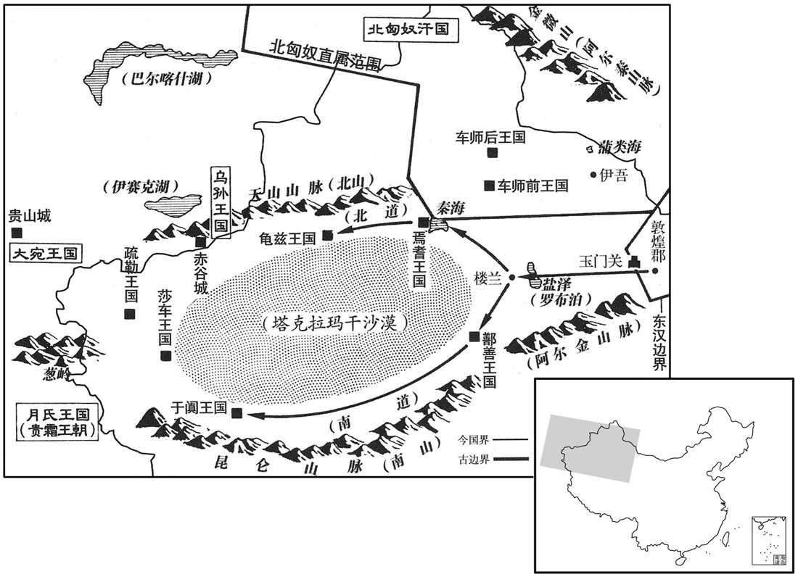

公元120年资治通鉴：本年记事、原文与白话对照
按原书编年位置阅读；追叙和史论不等于本年发生的事件。白话采用所据译本，缺译不以生成译文补齐。
卷50 · 本年记事
公元120年 · 汉孝安皇帝永宁元年
永宁元年〔（庚申、一二膶）是年，夏，四月，改元。〕
上传原文件年头的数字有误；按本卷年号与相邻年份定位为120年，原字保留。
本年事件索引（现代整理）
春，三月，丁酉，济北惠王寿薨。〔济，子礼翻。〕
春季，三月丁酉（十一日），济北惠王刘寿去世。
北匈奴率车师后王军就共杀后部司马及敦煌长史索班等，〔贤曰：司马，即属戊己校尉所统也；和帝时置戊己校尉，镇车师后部。考异曰：班勇传：「元初六，曹宗遣索班屯伊吾。后数月，北单于与车师后部共攻没索班。」按本纪，「永宁元年，车师后王叛，杀部司马。」车师传亦曰：「永宁元年，后王军就及母沙麻反畔，杀后部司马及敦煌行事。」盖班以去年末屯伊吾，今春见杀，或今春奏事方到也。〕遂击走其前王，略有北道。鄯善逼急，求救于曹宗，〔鄯，上扇翻。〕宗因此请出兵五千人击匈奴，以报索班之耻，因复取西域；公卿多以为宜闭玉门关，绝西域。太后闻军司马班勇有父风，召诣朝堂问之。〔班固西都赋曰：左右廷中，朝堂百僚之位；朝堂盖在殿庭左右。朝，直遥翻。〕勇上议曰：「昔孝武皇帝患匈奴强盛，于是开通西域，论者以为匈奴府藏，〔上，时掌翻。藏，徂浪翻。〕断其右臂。〔断，丁管翻。〕光武中兴，未遑外事，故匈奴负强，驱率诸国；及至永平，再攻敦煌、〔敦，徒门翻。〕河西诸郡，城门昼闭。孝明皇帝深惟庙策，〔惟，思也。贤曰：古者谋事必就祖，故言庙策也。余谓古者遣将必于庙，先定制胜之策，故谓之庙策。〕乃命虎臣出征西域，〔虎臣，谓其父起也。〕故匈奴远遁，边境得安；及至永元，莫不内属。会间者羌乱，西域复绝，〔复，扶又翻。〕北虏遂遣责诸国，备其逋租，高其价直，严以期会，〔备，偿也。西域属汉之后，不复以马畜、旃罽输匈奴，及与汉绝，匈奴复遣使责其积年所逋。逋，欠也。〕鄯善、车师皆怀愤怨，思乐事汉，〔乐，音洛。〕其路无从；前所以时有叛者，皆由牧养失宜，还为其害故也。今曹宗徒耻于前负，欲报雪匈奴，〔负，败也。报雪，谓报伊吾之役，雪索班之耻也。〕而不寻出兵故事，未度当时之宜也。〔度，徒洛翻。〕夫要功荒外，万无一成，〔要，一遥翻。荒外，谓在荒服之外。〕若兵连祸结，悔无所及。况今府藏未，〔藏，徂浪翻。〕师无后继，是示弱于远夷，暴短于海内，臣愚以为不可许也。旧敦煌郡有营兵三百人，今宜复之，复置护西域副校尉，居于敦煌，如永元故事，〔校，户教翻。〕又宜遣西域长史将五百人屯楼兰，〔楼兰，即鄯善。〕西当焉耆、龟兹径路，南强鄯善、于窴心胆，北扞匈奴，东近敦媓，如此诚便。」〔龟兹，音丘慈。窴，徒贤翻。〕
北匈奴率领车师后王军就，一同杀死后部司马及敦煌长史索班等人，乘胜赶走车师前王，控制了西域北道。鄯善国形势危急，向曹宗求救。于是曹宗上书朝廷，请求出兵五千人进攻匈奴，为索班雪耻，就此重新收回西域。朝中公卿多数认为应当关闭玉门关，和西域断绝关系。邓太后听说军司马班勇有其父之风，便召他到朝堂进见，询问他的意见。班勇建议道：“从前孝武皇帝因匈奴强盛而感到忧虑，于是开通了西域。评论者认为，这一举动是夺取了匈奴的宝藏，切断了匈奴的右臂。光武帝使大业中兴，未能顾及外部事务，因此匈奴得以仗恃强力，驱使各国服从。到了永平年间，匈奴再次进攻敦煌，致使河西地区各郡的城门白天关闭。孝明皇帝深思熟虑，制定国策，命虎将出征西域，匈奴因此向远方逃遁，边境才得到了安宁。及至永元年间，异族无不归附汉朝。但不久之前又发生了羌乱，汉朝与西域的关系再度中断。于是北匈奴派遣使者，督责各国缴纳拖欠的贡物，并提高价值，严格规定缴纳期限。鄯善、车师两国全都心怀怨愤，愿意臣属于汉朝，但却找不到途径。从前西域所以时常发生叛乱，都是由于汉朝官员对他们管理不当，并加以迫害的缘故。如今曹宗只是为先前的失败感到羞耻，要向匈奴报仇雪恨，并不研究从前的战史，也未衡量当前战略的利弊。在遥远的蛮荒建立功业，可能性极其微小，如果导致战争连年，祸事不断，则将后悔不及。况且如今国库并不充足，大军没有后继力量。这是向远方的异族显示我们的弱点，向天下暴露我们的短处，我认为不可批准曹宗的请求。从前敦煌郡有营兵三百人，现在应当恢复，并重新设置护西域副校尉，驻扎敦煌，如同永元年间的旧例。还应派遣西域长史率领五百人驻扎楼兰，在西方控制焉耆、龟兹的通道，在南方增强鄯善、于阗的信心和胆量，在北方抵抗匈奴，在东方捍卫敦煌。我确信这是上策。”

尚书复问勇：「利害云何﹖」〔勇既上议，当书复问，使悉陈其利害。复，扶又翻。〕勇对曰：「昔：永平之末，始通西域，初遣中郎将居敦煌，〔谓郑众也。〕后置副校尉于车师，〔谓耿恭、关宠也。〕既为胡虏节度，又禁汉不得有所侵扰，故外夷归心，匈奴畏威。今鄯善王尤还，汉人外孙，若匈奴得志，则尤还必死。〔贤曰：尤还，鄯善王名。〕此等虽同鸟兽，亦知避害，若出屯楼兰，足以招附其心，愚以为便。」〔此勇所谓利也。〕
尚书又向班勇询问：“这个计策利害如何？”班勇回答说：“从前，在永平末年，刚刚恢复与西域的交通，第一次派遣中郎将驻守敦煌，后来又在车师设置了副校尉。既指挥胡人，调解他们的冲突；又防禁汉人，不许对胡人有所侵扰。所以外族归心于汉朝，匈奴畏惧汉朝的威望。当今的鄯善王尤还，是汉人的外孙，如果匈奴得逞，那么尤还必死。这些外族虽然如同鸟兽，也知道逃避危害，我们如果在楼兰驻军，便足以使他们归心，我认为这样做是有利的。”
长乐卫尉镡显、〔类篇：镡，如心翻，姓也。贤曰：镡，音徒南翻。唐韵又音寻。〕廷尉綦毋参、〔綦毋，姓也，左传晋有綦毋张。〕司隶校尉崔据难曰：〔难，乃旦翻；下同。〕「朝廷前所以弃西域者，以其无益于中国而费难供也。今车师已属匈奴，鄯善不可保信，一旦反复，班将能保北虏不为边害乎﹖」〔贤曰：以勇为军司马，故以将言之。将，音子亮翻。〕勇对曰：「今中国置州牧者，以禁郡县奸猾盗贼也。若州牧能保盗贼不起者，臣亦愿以要斩保匈奴之不为边害也。〔要，读曰腰。〕今通西域则虏势必弱，虏势弱则为患微矣；孰与归其府藏，续其断臂哉﹖今置校尉以扞抚西域，设长史以招怀诸国，若弃而不立，则西域望绝，望绝之后，屈就北虏，缘边之郡将受困害，恐河西城门必须有昼闭之儆矣！〔明帝永平中，北匈奴胁诸国共寇河西郡县，城门昼闭。复，扶又翻；下同。〕今不廓开朝廷之德而拘屯戌之费，若此，北虏遂炽，岂安边久长之策哉！」〔此勇所谓害也。炽，尺志翻。〕
长乐卫尉镡显、廷尉綦毋参、司隶校尉崔据提出诘难，说：“朝廷先前所以放弃西域，是由于西域不能给汉朝带来利益，而且费用庞大，难以供应的缘故。目前车师已经臣属于匈奴，鄯善也不可信赖，一旦局势有变，班将军能担保北匈奴不来侵害边疆吗？”班勇回答说：“如今汉朝设置州牧，是为了禁止郡县的奸人盗匪。如果州牧能够担保盗匪不作乱，我也愿以腰斩来担保匈奴不侵害边疆。现在若是开通西域，那么匈奴的势力就必定削弱；匈奴的势力削弱，那么危害也就轻微了。这与把宝藏交还给匈奴，并为它接上断臂能相比吗？如今设置西域校尉，是用来保护安抚西域；设置长史，是用来招揽怀柔各国。假如放弃西域而不设置校尉、长史，那么西域就会对汉朝绝望，绝望之后就会屈从北匈奴，汉朝的沿边各郡就将受到侵害，恐怕河西地区必定又将有白天关闭城门的警报了！现在不推广朝廷的恩德，而吝惜屯戍的费用，这样下去，北匈奴就会气焰高涨，这难道是保护边疆安全的长久策略吗！”
太尉属毛轸难曰：「今若置校尉，则西域骆驿遣使，求索无厌，〔索，山客翻。厌，于盐翻。百官志：太尉掾属二十四人；东、西曹掾比四百石，余掾比三百石，属比二百石。〕与之则费难供，不与则失其心，一旦为匈奴所迫，当复求救，则为役大矣。」勇对曰：「今设以西域归匈奴，而使其恩德大汉，不为钞盗，则可矣。〔钞，楚交翻。〕如其不然，则因西域租入之饶，兵马之众，以扰动缘边，是为富仇雠之财，增暴夷之势也。置校尉者，宣威布德，以系诸国内向之心而疑匈奴觊觎之情，〔觊，音冀。觎，音俞。〕而无费财耗国之虑也。且西域之人，无他求索，其来入者不过禀食而已；〔禀，笔锦翻，给也。食，读曰坔。〕今若拒绝，势归北属夷虏，〔言其事势所归，必至北属匈奴。〕并力以寇并、凉，则中国之费不止十亿。置之诚便。」
太尉属毛轸诘难道：“如今要是设置了校尉，那么西域各国就会络绎不断地派遣来使，索求赏赐，不知满足。若是给予他们，那么费用太多而难以供应，若是不给他们，就会失掉归顺之心。而一旦受到匈奴的逼迫，还要再向汉朝求救，那时便需动用兵力，费事就更大了。”班勇答复道：“假设我们现在把西域交给匈奴，使匈奴感激汉朝的恩德，以使它从此不再侵略作乱，那么就可以这样办。假如不然，匈奴就会因为得到了西域，而利用西域丰厚的贡物和众多的兵马，骚扰攻击汉朝的边境。这是为仇人增加财富，为横暴的敌国增强实力。设置校尉，是为了宣扬推广汉朝的国威和恩德，以维系西域各国的归附之心，动摇匈奴的觊觎之意，不会带来消耗国家资财的忧虑。况且西域之人，并没有其它的要求，使节来到汉朝，不过是供应他们膳食而已。现在若是拒绝西域各国，它们势必归属北方的匈奴人。如果各种力量联合起来，一同侵略并州、凉州，那么国家的开支将不止十亿。我相信，设置西域校尉确实是有利的。”
于是从勇议，复敦煌郡营兵三百人，置西域副校尉居敦煌，虽复羁縻西域，然亦未能出屯。〔谓未能奴勇计出屯楼兰西也。然使尽行勇之计，亦未必能羁制西域，何者﹖武帝通西域，未能尽臣属西域也；及宣帝时，日逐降，呼韩邪内附，始尽得西域。明帝使班超通西域，未能尽臣属西域也；及窦宪破北匈奴，超始尽得西域。今汉内困于诸羌，而北匈奴游魂蒲类，安能以五百人成功哉！〕其后匈奴果数与车师共入寇钞，河西大被其害。〔数，所角翻。钞，楚交翻。被，皮义翻。〕
于是朝廷采纳了班勇的建议，向敦煌郡重新派遣营兵三百人，并设置西域副校尉驻守敦煌。朝廷虽然再次控制西域，却未能越出边境，到西域驻兵。后来，匈奴果然屡次同车师一道侵犯内地，河西地区受到严重伤害。
沈氐羌寇张掖。〔贤曰：沈氐，羌号也。续汉书曰：羌在上郡西河者，号沈氐。〕
羌人沈氐部落攻打张掖郡。
夏，四月，丙寅，立皇子保为太子，改元，赦天下。
夏季，四月丙寅（十一日），将皇子刘保立为太子。改年号。大赦天下。
己巳，绍封陈敬王子崇为陈王，济北惠王子苌为乐成王，〔济，子礼翻。〕河间孝王子翼为平原王。
己巳（十四日），将前陈敬王刘羡的儿子刘崇封为陈王，继承刘羡。将济北惠王刘寿的儿子刘苌封为乐成王，将河间孝王刘开的儿子刘翼封为平原王。
六月，护羌校尉马贤将万人讨沈氐于张掖，破之，斩首千八百级，获生口千余人，余虏悉降。〔降，户江翻。〕时当煎等〔【章：甲十六行本「等」作「种」；乙十一行本同；张校同。】〕大豪饥五等，以贤兵在张掖，乃乘虚宝金城，贤还军〔【章：甲十六行本「军」下有「追之」二字；乙十一行本同；孔本同；张校同，退斋校同。】〕出塞，斩首数千级而还。烧当、烧何种闻贤闻贤军还，复寇张掖，杀长吏。〔马贤于时为健。然观其往来奔命，羌人辄议其后，贤不思所以制之之术，重以不恤军事，宜其有射姑山之败也。还，从宣翻，又如字。种，章勇翻。复，扶又翻。长，知两翻。〕
六月，护羌校尉马贤率领一万兵众，在张掖郡讨伐羌人沈氐部落。打败羌军，斩杀一千八百人，俘虏一千余人，其余的全部投降。当时，当煎部落首领饥五等人，因马贤的部队集中在张掖，便乘虚而入，攻打金城。马贤率军由张掖返回，追击直到塞外，斩杀数千人后班师。烧当、烧何二部落听说马贤大军返回金城，又再次进攻张掖，杀害官吏。
秋，七月，乙酉朔，日有食之。
秋季，七月乙酉朔（初一），出现日食。
冬，十月，己巳，司空李合免。〔合，古合翻；又曷阁翻。〕癸酉，以卫尉庐江陈褒为司空。
冬季，十月己巳（十六日），将司空李免官。癸酉（二十日），将卫尉、庐江人陈褒任命为司空。
京师及郡国三十三大水。
京城洛阳及三十三个郡和封国发生水灾。
十二月，永昌徼外掸国王雍曲调遣使者献乐及幻人。〔西南夷传：幻人能变化、吐火、自支解、易牛马头，自言我海西人，海西即大秦也。今按大秦即武帝时犁靬国，今谓之拂菻。掸，音檀。范书「雍曲调」作「雍由调」，徼，吉吊翻。〕
十二月，永昌郡边境外的掸国国王雍曲调派遣使者进献乐队和魔术艺人。
戊辰，司徒刘恺请致仕；许之，以千石禄归养。
戊辰（十六日），司徒刘恺请求退休，获得批准，被赐予每年一千石的终身俸禄，回乡养老。
辽西鲜卑大人乌伦、其至鞬各以其众诣度辽将军邓遵降。〔乌伦、其至鞬，二人也。鞬，居言翻。〕
辽西郡的鲜卑大人乌伦和其至，各自率领部众向度辽将军邓遵投降。
癸酉，以太常杨震为司徒。
癸酉（二十一日），将太常杨震任命为司徒。
是岁，郡国二十三地震。
本年，有二十三个郡和封国发生地震。
太后从弟越骑校尉康，以太后久临朝政，宗门盛满，数上书太后，〔从，才用翻。上元初六年书从兄康，此书从弟；征诸范史，当从「兄」字。数，所角翻。上，时掌翻。〕以为宜崇公室，自损私权，言甚切至，太后不从。康谢病不朝，太后使内侍者问之；所使者乃康家先婢，〔先本康家婢，后入宫，在太后左右。〕自通「中大人」，〔时宫中耆宿皆称中大人。〕康闻而诟之。〔贤曰：诟，骂也；音许遘翻，又古候翻。〕婢怨恚，〔恚，于避翻。〕还，白康诈疾而言不逊。太后大怒，免康官，遣归国，〔康永初中绍封夷安侯。〕绝属籍。
邓太后的堂弟、越骑校尉邓康，因邓太后摄政已久，家庭权势过盛，屡次向邓太后上书，认为应当抬高朝廷的威望，自行削减外戚的私权，言辞极其恳切。邓太后拒不采纳。于是邓康声称有病，不去朝见。邓太后派内宫侍者前去探问。这位侍者先前做过邓康家的婢女，而通报自己是“中大人”，邓康听到以后，辱骂了这位侍者。侍者心怀怨恨，回宫后，便报告说邓康装病，并且出言不逊。邓太后大怒，将邓康免官，遣回封国，取消了他的族籍。
初，当煎种饥，五同种大豪卢葱、忍良等千余户〔种，章勇翻；下同。〕别留允街，而首施两端。〔贤曰：首施，犹首鼠也。允，音铅。〕
当初，与饥五同族的当煎部落首领卢、忍良等一千余户单独居住在允街，而摇摆不定。